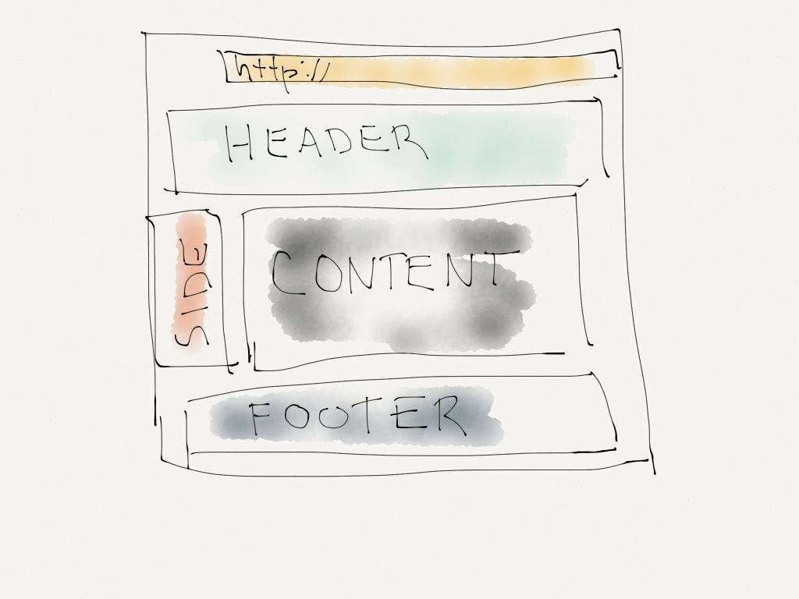
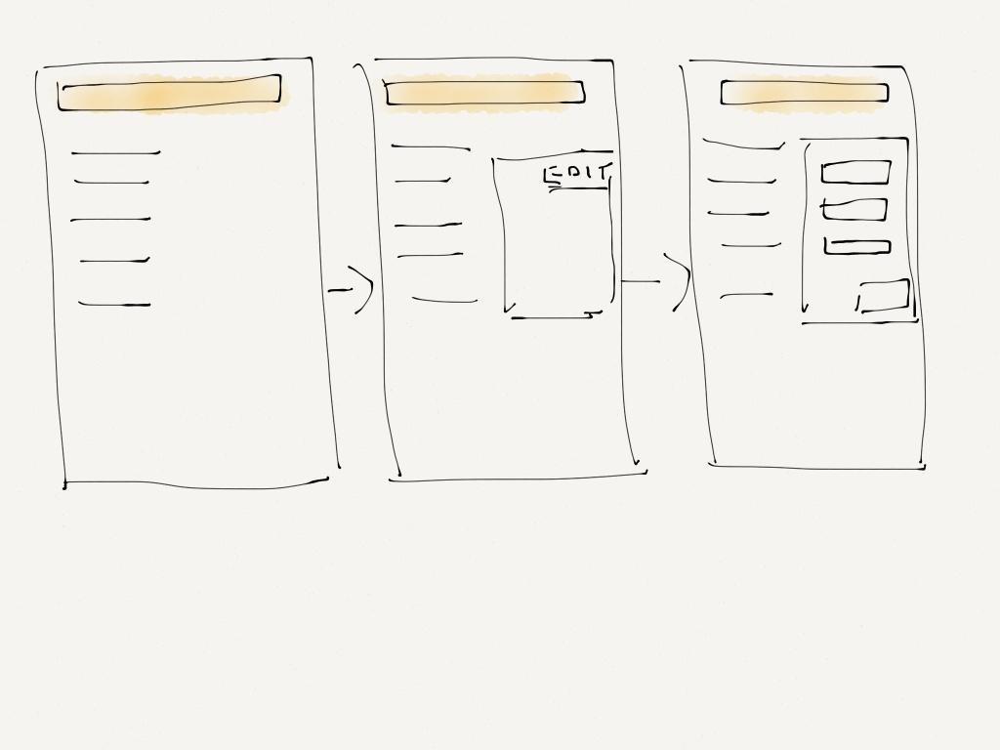

【JS-6】
angularJS的两种路由ng-router和ui-router的差异？
分享人：黄诚翰
目录
1.背景介绍
2.知识剖析
3.常见问题
4.解决方案
5.编码实战
6.扩展思考
7.参考文献
8.更多讨论
一.背景介绍
angular路由
AngularJS 路由允许我们通过不同的 URL 访问不同的内容。
通过 AngularJS 可以实现多视图的单页Web应用（single page web application，SPA）。
说了那么多，那么，什么是路由呢？
AngularJs中的路由，应用比较广泛，主要是允许我们通过不同的url访问不同的内容，可实现多视图的单页web应用。下面看看具体怎么使用。
通常我们的URL形式为http://jtjds.cn/first/page，但在单页web应用中angularjs通过#+标记实现，比如下面的页面，将是下文中的路由列子：
http://192.168.1.109:8000/angular-program/src/main.html#/pagetable/page1
http://192.168.1.109:8000/angular-program/src/main.html#/pagetable/page2
http://192.168.1.109:8000/angular-program/src/main.html#/pagetable/page3
当我们点击以上任一一个链接时，向服务器请求的地址都是http://192.168.1.109:8000/angular-program/src/main.html ，而＃号之后的内容在向服务器端请求时会被浏览器忽略掉，所以我们在客户端实现＃号后面的功能实现即可。简单来说，路由通过＃＋标记帮助我们区分不同逻辑页面，并将其绑定到对应的控制器上。

每个页面均有一个控制器控制，通过路由，从而将不同的页面展示出来。
二.知识剖析
ng-Route
使用方法 1) 引入 angular-route lib
无论是 ngRoute 还是 ui.router ，作为框架额外的附加功能，都必须以 模块依赖 的形式被引入,而且要注意，需要先引用angular,这是因为angular-router.js需要传入window.angular这个参数，这个参数只有在加载angular才会出现。
配置路由
var app = angular.module('ngRouteApp', ['ngRoute']);
app.config(function($routeProvider){
$routeProvider
.when('/Main', {
templateUrl: "main.html",
controller: 'MainCtrl'
})
.otherwise({ redirectTo: '/tabs' });
服务与指令
ngRoute 路由模块名
$routeProvider 服务提供者，用来定义一个路由表，即地址栏与视图模板的映射，对应于 ui.router 中的 urlRouterProvider 和 stateProvider
$route 服务，完成路由匹配，并且提供路由相关的属性访问及事件，如访问当前路由对应的 Controller，对应于下面的 $urlRouter 和 $state
$routeParams 服务，保存了地址栏中的参数，对应于下面的 $stateParams
ng-view 指令，用来在主视图中指定加载子视图的区域，对应于下面的 ui-view
ui-router
使用方法
1、引入js文件
注入ui-router模块
var app = angular.module('myApp', ['ui.router']);
app.config(function($urlRouterProvider, $stateProvider) {
$urlRouterProvider.otherwise("/index"); //这条是相当于报错的时候跳转
$stateProvider
.state("Main", {
url: "/main",
templateUrl: "main.html",
controller: 'MainCtrl'
})
服务与指令
ui.router 路由模块名
$urlRouterProvider 服务提供者，用来配置路由重定向
$stateProvider 服务提供者，用来配置路由
$urlRouter 服务
$state 服务，用来显示当前路由状态信息，以及一些路由方法（如：跳转）
$stateParams 服务，用来存储路由匹配时的参数ui-view 指令，路由模板渲染，对应的 dom 相关联
ui-sref 指令，链接到特定状态
三.常见问题
多视图
大多数的应用程序都可以分解为一个一个区块。最简单的情况，一个应用程序有头部（header）,主体内容（main content area），以及一个尾部（footer）。
通常一个应用程序会有一个额外的侧边栏（sidebar ）在页面的左边或者右边。
大多数用例中，这些区块将同时显示在页面上。Angular.js 的内置路由ngRoute只允许一个视图（ng-view）出现在页面上。
因为ng-router无法命名ng-view，而ui-router则可以通过命名ui-view来实现显示不同的视图出现在页面上
//html部分
//js部分
.state("login.page1",{
url:"/page1",
views:{
'':{template:"page2"},
'login':{template:"hello"}
}
})
可以给视图命名，如：ui-view=”status”。
可以在路由配置中根据视图名字(如：status)，配置不同的模板（其实还有controller等）。
嵌套视图
嵌套视图：页面某个动态变化区块中，嵌套着另一个可以动态变化的区块。
其实，嵌套视图，在html中的最终表现就像这样：
session
article
转成javascript，我们会在程序里这样写：
.when('/error', {
template: 'error'
})
一运行，报了一个这样的错误：
RangeError: Maximum call stack size exceeded
发现浏览器崩溃了，因为 ng-view 会陷入死循环，无限递归下去。
使用 ui.router 能很容易解决这个问题，因为它定义的路由有明确的父子关系，并通过 ui-view 指令将子路由模版插入到父路由模板的 ui-view中去，从而实现视图嵌套。看代码：
$stateProvider
.state("login",{
url:"/login",
templateUrl:"login.html"
//controller: 'loginCtr' //选择控制器 也能写成 loginCtr as login
})
.state("login.page1",{
url:"/page1",
template:"page1"
})
.state("login.page2",{
url:"/page2",
template:"page2"
})
.state("login.page3",{
url:"/page3",
template:"page3"
})
四.解决方案
五.代码实战
六.拓展思考
单页web应用（SPA）的简单介绍
单页 Web 应用 (single-page application 简称为 SPA) 是一种特殊的 Web 应用。它将所有的活动局限于一个Web页面中，仅在该Web页面初始化时加载相应的HTML、JavaScript 和 CSS。一旦页面加载完成了，SPA不会因为用户的操作而进行页面的重新加载或跳转。而是利用 JavaScript 动态的变换HTML的内（采用的是div切换显示和隐藏），从而实现UI与用户的交互。由于避免了页面的重新加载，SPA 可以提供较为流畅的用户体验。得益于ajax，我们可以实现无跳转刷新，又多亏了浏览器的histroy机制，我们用hash的变化从而可以实现推动界面变化。
为了单页面应用的要求（改变视图的同时不会向后端发出请求。），浏览器当前提供了以下两种支持hash和history：
hash —— 即地址栏 URL 中的 # 符号（此 hash 不是密码学里的散列运算）。
比如这个 URL：http://www.abc.com/#/hello，hash 的值为 #/hello。它的特点在于：hash 虽然出现在 URL 中，但不会被包括在 HTTP 请求中，对后端完全没有影响，因此改变 hash 不会重新加载页面。
history —— 利用了 HTML5 History Interface 中新增的 pushState() 和 replaceState() 方法。（需要特定浏览器支持）
这两个方法应用于浏览器的历史记录栈，在当前已有的 back、forward、go 的基础之上，它们提供了对历史记录进行修改的功能。只是当它们执行修改时，虽然改变了当前的 URL，但浏览器不会立即向后端发送请求。
如果不想要很丑的 hash，我们可以用路由的 history 模式，这种模式充分利用 history.pushState API 来完成 URL 跳转而无须重新加载页面。—— Vue-router 官网。
router去掉#
ui.router原理是改变location.hash的值，而location.hash 本来就是指 URL 里 # 符号及其后的部分，如果你是要做路由映射并且不想用基于 hash 的方案，那你应该考虑 HTML5 的 History API。
$location服务支持配置两种URL格式：Hashbang模式（默认）和HTML5模式。两种模式下的API都是通用的。如下图
静态网站，我们需要修改的地方包含三个文件
index.html : ng-app的定义文件
app.js : 对应ng-app的控制文件
nginx.conf : nginx的网站配置文件
编辑 index.html，增加base标签。
在head标签里增加一行
编辑app.js，增加 $locationProvider.html5Mode(true)
book.config(['$routeProvider', '$locationProvider', '$sceProvider', 'tplProvider', function ($routeProvider, $locationProvider, $sceProvider, tplProvider) {
$routeProvider
.when('/', {templateUrl: tplProvider.html('welcome'), controller: 'WelcomeCtrl'})
.when('/book', {templateUrl: tplProvider.html('book'), controller: 'BookCtrl'}) //图书
.when('/book-r1', {templateUrl: tplProvider.html('book-r1'), controller: 'BookR1Ctrl'}) //R的极客理想
.when('/video', {templateUrl: tplProvider.html('video'), controller: 'VideoCtrl'}) //视频
.when('/about', {templateUrl: tplProvider.html('about'), controller: 'AboutCtrl'}) //关于作者
.otherwise({redirectTo: '/'});
$locationProvider.html5Mode(true);
}]);
编辑nginx的配置文件，增加try_files配置。
server {
set $htdocs /www/deploy/mysite/onbook;
listen 80;
server_name onbook.me;
location / {
root $htdocs;
try_files $uri $uri/ /工程名/index.html =404;
}
}
七.参考文献
八.更多讨论
关于ui-router与ng-rouer还有什么想了解的
感谢大家观看